올해 브랜드 전략팀에서 일을 시작했다. 맡은 건 주거 브랜드 마케팅이다. 아는 게 없어서 일단 세상 모든 브랜드와 마케팅을 공부하기로 했고, 배운 것은 이곳에 기록한다. 같은 공부를 하는 사람에게도 도움이 되면 좋겠다.
첫 주제는 광고다. 사례를 모으다 보니 오래 남는 광고에는 공통점이 하나 있었다. 브랜드가 주인공이 아니었다. 유명 브랜드 5편과 주거 광고 7편, 총 12편을 같은 질문으로 다시 봤다. "이 광고의 주인공은 누구인가."
PART 1. 유명 브랜드 5편
원리부터 확인한다. 다섯 편 모두 제품 설명이 거의 없다.
Nike — Find Your Greatness
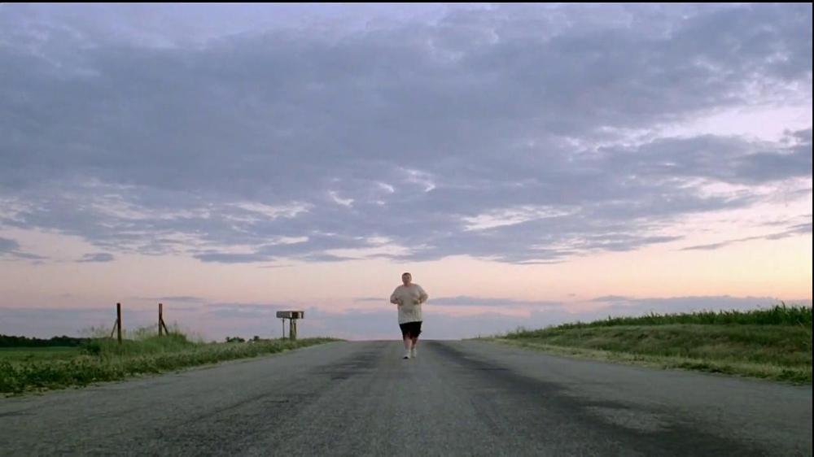
2012년 런던 올림픽 때 나온 'Jogger' 편은 스타 선수 대신 평범한 소년이 길을 달리는 장면으로 채워진다. 운동화 이야기는 한마디도 없다.
와우 포인트: 영상이 끝나면 Nike보다 "나도 뛰어볼까"가 먼저 남는다. 브랜드는 그 마음 뒤에서 조용히 서 있을 뿐이다.
Dove — Real Beauty Sketches
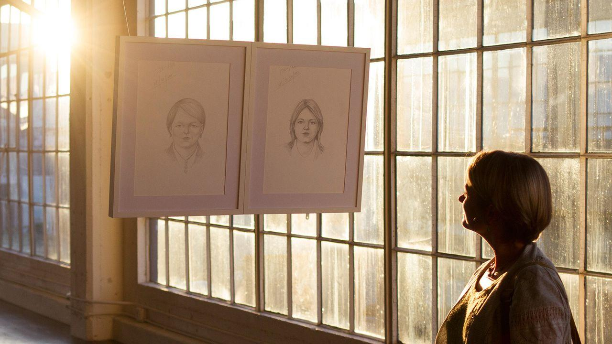
여성이 자신의 얼굴을 직접 설명하고, 다른 사람이 같은 얼굴을 묘사한다. 두 스케치를 나란히 놓으면 차이가 보인다.
와우 포인트: 비누 이야기를 하지 않았는데 비누 브랜드가 기억에 남는다. 광고의 클라이맥스가 제품이 아니라 보는 사람의 깨달음이다.
Apple — Shot on iPhone
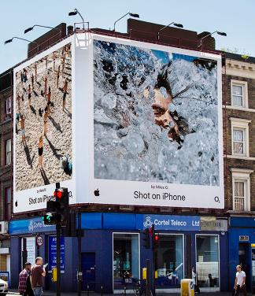
'Shot on iPhone'은 카메라 스펙을 읽어주지 않는다. 사람들이 아이폰으로 찍은 사진을 그대로 걸어 놓는다.
와우 포인트: 광고 한 장이 곧 제품 성능 증명서가 된다. 주인공 자리를 사용자에게 넘겼는데 브랜드가 더 단단해진다.
자료: Apple Newsroom ↗
Airbnb — Belong Anywhere
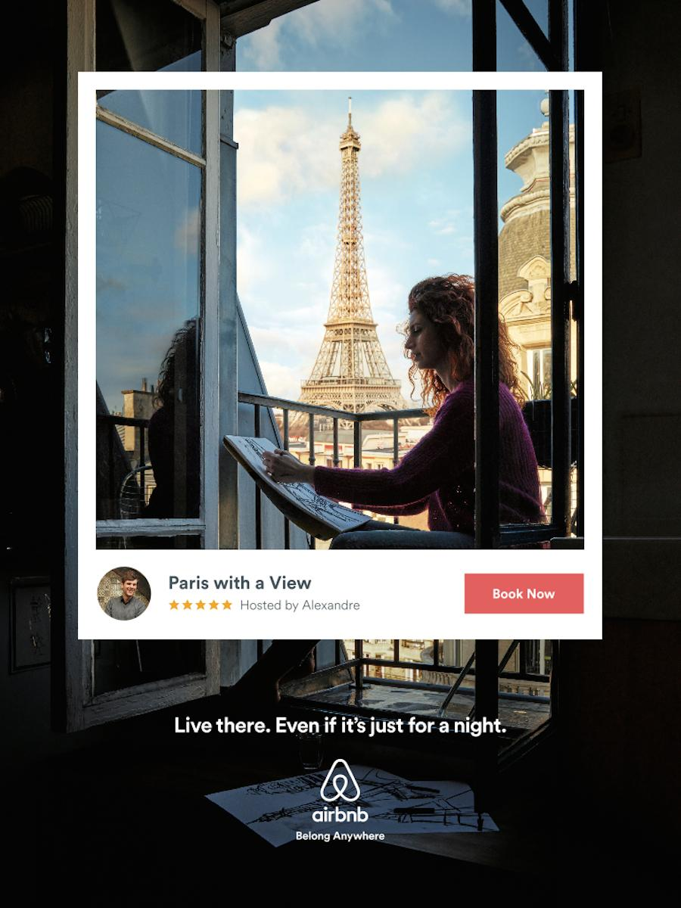
숙소 크기나 시설 대신 "낯선 곳에서도 속해 있다고 느끼는 경험"을 브랜드 중심 가치로 내세웠다.
와우 포인트: 파는 것은 숙박인데 말하는 것은 감정이다. 집이라는 공간이 목적이 아니라 소속감을 만드는 장치가 된다.
Coca-Cola — Share a Coke
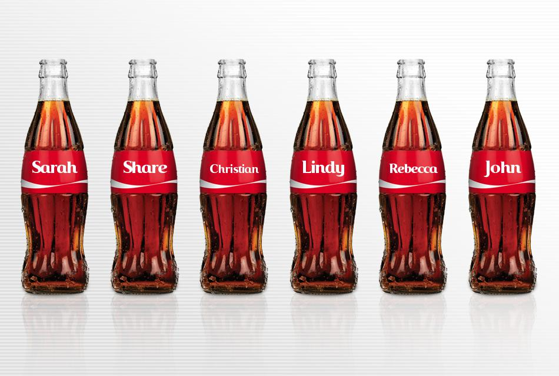
2011년 호주에서 시작된 'Share a Coke'는 병에 있는 로고 옆 자리에 사람 이름을 넣었다. 친구와 가족에게 나눠주는 행동이 캠페인의 중심이 됐다.
와우 포인트: 콜라 맛이 아니라 "누구에게 줄까"가 구매 이유가 된다. 제품이 관계를 표현하는 도구로 바뀐다.
PART 2. 주거 광고 7편
집은 스펙 설명이 가장 쉬운 상품이다. 입지, 면적, 조경, 커뮤니티, 가격이 전부 숫자로 나온다. 그래서 더 눈에 띄는 사례들이 있다. 질문이 "어떤 집인가"에서 "그 집에서 어떤 삶이 만들어지는가"로 바뀌어 있었다.
Corcoran — Live Who You Are
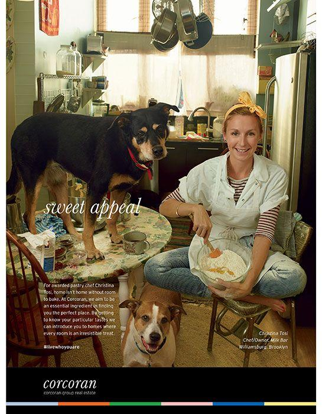
2000년대 중반 시작된 'Live Who You Are'는 매물 목록이나 중개인 전문성을 앞세우지 않는다. 집에서 어떤 사람이 되는지를 말한다. 이후 'Be Home'으로 이어졌고, 회사 스스로도 기존 부동산 광고 관습에서 벗어난 시도였다고 설명한다.
우리 일에 가져온다면: 평면 설명 앞에 "이 집의 주인은 어떤 사람인가"를 먼저 쓸 수 있을까.
Stage Apartments — The Stage is Yours
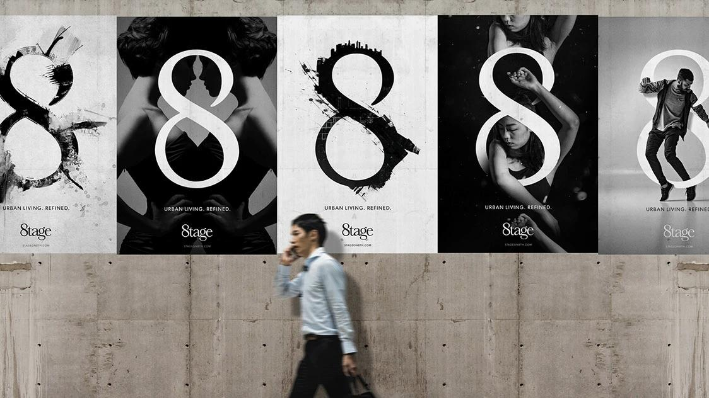
매니페스토가 "Life is a drama, and we are all actors in it"로 시작한다. House는 물리적 공간, Home은 감정, 집은 삶을 펼치는 무대라는 정의다.
와우 포인트: 브랜드가 주인공 자리를 아예 포기한다. 사람이 배우고 브랜드는 무대만 만든다. 주거 브랜드 철학으로 그대로 가져다 쓸 수 있는 구조다.
Echelon Seaport — It's not just where you live. It's how.
보스턴 Seaport의 대형 주거 프로젝트다. 대화를 'what Echelon offered'에서 'what it felt like to live there'로 바꿨다. 패션 에디토리얼 같은 이미지와 사람 중심 장면으로 주거를 라이프스타일로 풀었다.
우리 일에 가져온다면: 시설 목록 대신 사람을 캐릭터로 세우는 방식이다. 카피 한 줄이 "무엇이 있다"에서 "어떻게 산다"로 바뀐다.
자료: 캠페인 제작사 사례 ↗ · 공식 사이트 ↗
Mahindra Lifespaces — Crafting Life
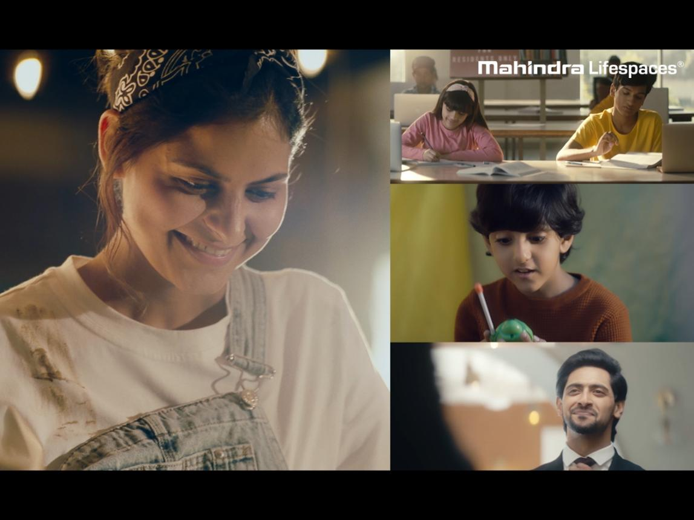
인도 Mahindra Lifespaces는 'Crafting Life'를 브랜드 프라미스로 내세웠다. 부동산을 구조물 공급이 아니라 삶의 출발점으로 해석한 캠페인이다.
와우 포인트: 건설사가 자기 업의 정의를 바꿨다. 아파트 이야기를 하지 않고 공간이 건강·성장·일상에 미치는 영향을 말한다.
자료: 캠페인 영상 ↗ · Mahindra 공식 발표 ↗
Alcinos Residencial — Stories Without Limits
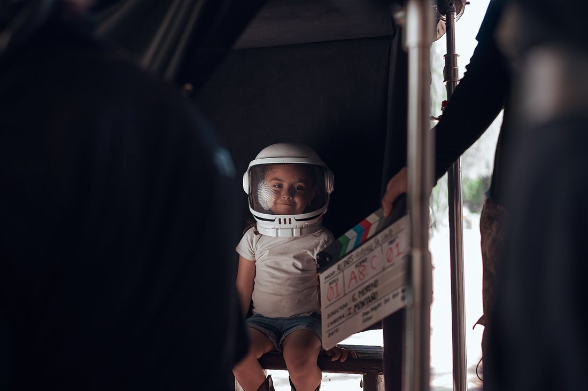
'Stories Without Limits'는 가족의 일상을 18개 에피소드로 보여주는 콘텐츠 시리즈다. 출발점은 "집은 가족이 자기 이야기를 시작하는 곳"이라는 한 문장이었다.
와우 포인트: 집 공간은 거의 배경으로만 나온다. 한 편짜리 광고가 아니라 시리즈로 가면 브랜드가 이야기의 무대로 남는다.
자료: 캠페인 제작사 설명 ↗
Seeff — Home is our Story
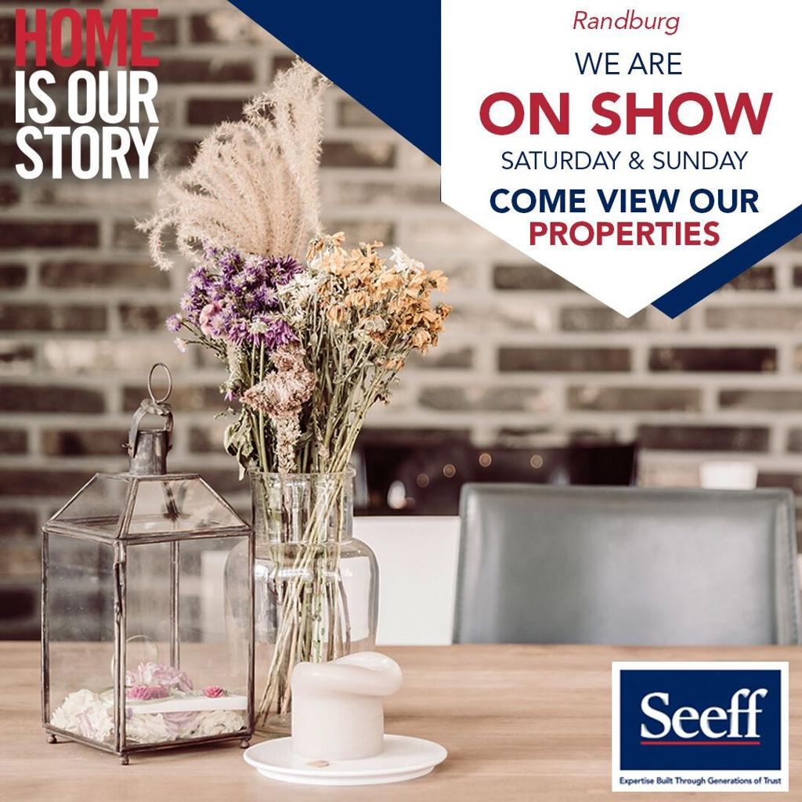
남아공 Seeff는 2018년 리포지셔닝에서 에이전트·매물·자격 중심 커뮤니케이션을 접고 'Home is our Story'를 내세웠다. 제작사는 이 전략을 'turn the lens around'라고 부른다.
와우 포인트: 주인공이 중개회사에서 고객으로 바뀌었다. 거래가 아니라 사람이 겪는 감정적인 순간이 중심이 된다.
자료: Seeff 리포지셔닝 사례 ↗ · Seeff 공식 ↗
KCC건설 스위첸 — 문명의 충돌
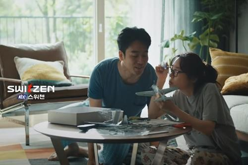
2020년 '문명의 충돌'은 결혼 4년 차 부부의 사소한 갈등을 관찰 예능처럼 보여준다. 평면, 자재, 커뮤니티, 입지는 거의 나오지 않는다. 서로 다른 두 사람이 가족이 되어가는 과정만 남는다.
와우 포인트: 고급·프리미엄·첨단 같은 흔한 수사를 전부 뺐는데 큰 화제가 됐고, '문명의 충돌 2'로 이어졌다. 관련 연구도 이 점을 독특한 전략으로 분석했다. 국내 주거 광고 중 가장 오래 남은 사례다.
자료: 캠페인 영상 ↗ · 스위첸 공식 브랜드 소식 ↗ · 학술 연구 ↗ · 캠페인 분석 ↗
정리 — 12편을 보고 남은 것
Nike는 가능성, Dove는 자기 인식, Apple은 사용자의 결과물, Airbnb는 소속감, Coca-Cola는 관계를 보여줬다. 주거 쪽은 정체성(Corcoran), 무대(Stage), 사는 방식(Echelon), 삶을 만든다는 정의(Mahindra), 가족 이야기(Alcinos), 고객의 순간(Seeff), 부부의 일상(스위첸)이다.
전부 제품을 말하지 않고 사람을 말한다. 그런데 브랜드는 오히려 더 선명하게 남는다. 집처럼 사람이 실제로 사는 상품이라면 이 효과가 더 크다고 느꼈다.
기획할 때 스스로에게 던질 질문
- 이 광고의 주인공은 누구인가.
- 브랜드 이름을 빼도 이야기가 성립하는가.
- 제품 기능보다 먼저 사람의 감정·관계를 그렸는가.
- 브랜드를 Hero가 아니라 Guide나 Stage로 설계했는가.
- 끝난 뒤 "이 브랜드 좋다"가 아니라 "저렇게 살고 싶다"가 남는가.
앞으로 청약·분양 콘텐츠를 만들 때도 이 질문을 기준으로 삼는다. 단지 자랑보다 그 집에서 만들어질 삶을 먼저 보여주는 쪽으로.
브랜드 공부 기록은 계속 이어진다. 다음 글에서 또 다른 사례를 다룬다.